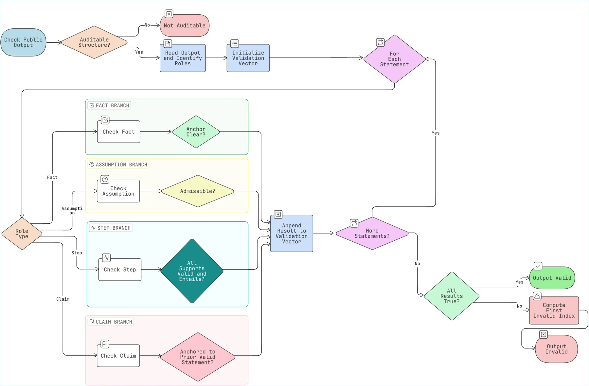

Walk Me Through
Your Work
short public explainer · manuscript not hosted here during reviewEven if I knew exactly how a model produced an answer, I would still want to know whether the answer in front of me gives me good reasons to believe it.
The thing that bothered me
How did the model produce this?
Interpretability and faithfulness ask valuable questions about the model as an actor: internal mechanisms, causal drivers, and whether a rationale reflects the process that produced an answer.
Does this answer actually support itself?
For reliance, there is another question about the output as an action: are the stated premises, assumptions and intermediate steps enough to support the public conclusion?
What I mean by “auditable”
An auditable output is written clearly enough that another person can replay its route from the query to the claim without privileged access to model internals. I use four simple statement roles:
If the output is structured well enough to recover these roles and the support relations between them, you can replay it statement by statement. If it is not, there is no replay to perform.

The failure taxonomy
F1 · Assumption rejection
An assumption is explicit and replayable, but the auditor rejects it as inadmissible under the applicable standard.
F2 · Fact anchor unclear
A statement is presented as a fact, but the output does not make clear where that fact comes from.
F3 · Non-entailment step
A step has readable supports, but those stated grounds do not actually entail the step.
F4 · Unanchored claim
A user-facing claim cannot be matched to a valid prior statement in the work.
F1 to F4 are therefore auditable failures. The structure is good enough to replay, and the breakdown can be localized. F0 is the case where that is impossible.
A complete replay
The query
I am preparing a hotel reimbursement claim and need to decide whether to submit it today. The policy says a claim is eligible only if, at submission, the trip was required for work, the pre-tax room rate is no more than USD 220 per night, and an itemized receipt is attached. My manager required the trip for a client meeting, and the room cost USD 185 per night before tax. I currently have only a booking confirmation. The hotel says it will send the itemized receipt tomorrow. Would the claim be eligible if submitted today?
The model's public work
s0Assumption: Assume the quoted excerpt is the current and complete policy governing this claim.s1Fact: The policy requires a work-related trip, a pre-tax rate of at most USD 220, and an itemized receipt at submission. If any condition is missing, the claim is not eligible.s2Fact: The user states that their manager required the trip for work.s3Fact: The user states that the room rate was USD 185 before tax.s4Fact: The user is asking about submission today and currently has only a booking confirmation. The itemized receipt is expected tomorrow.s5Step: The work requirement is satisfied.s6Step: The rate requirement is satisfied.s7Step: The receipt requirement is not satisfied today because no itemized receipt is currently attached.s8Step: One required condition is therefore missing today.s9Step: Under the stated policy, the claim is not eligible if submitted today.s10Claim: No. Under the quoted policy, the claim is not eligible if submitted today because the itemized receipt is missing.
Why this replay passes
s0 is exposed as an assumption. s1 to s4 are anchored to the quoted policy or the user input. s5 to s9 each follow from readable prior support. The final claim restates the established conclusion.
What the auditor gets
The important dependencies are visible. The result depends on the timing condition, the difference between a booking confirmation and an itemized receipt, and the assumption that the quoted excerpt is the governing policy. Any of these can be challenged directly.
Now break one step
Replace s7 onward with this
s7′Step: Because the hotel says it will send the itemized receipt tomorrow, the receipt condition can be treated as satisfied for today's submission.s8′Step: The work, rate and receipt conditions are satisfied, so all three conditions are satisfied today.s9′Step: The claim is eligible if submitted today.s10′Claim: Yes. Under the quoted policy, the claim is eligible if submitted today.
s7′. The fact that the hotel intends to provide a receipt tomorrow does not establish that an itemized receipt is attached at submission today. The later steps inherit that failure. The output is still auditable because its structure and dependencies can be replayed, but it is invalid under replay.What this does not mean
Auditability is not correctness. A structured answer can still contain a false fact, a rejected assumption or an invalid inference. The point is to make the relevant commitments visible enough that somebody can challenge them.
It also does not require turning natural-language reasoning into formal proof. The framework is a semantic target: make what is given, assumed, derived and claimed readable, together with the support relations that matter.
Where this connects to TIME
TIME asks when explicit reasoning should appear at all. This paper starts one step later: if a model is going to expose reasoning, what does that public artifact need to provide before it is actually useful as a justification?